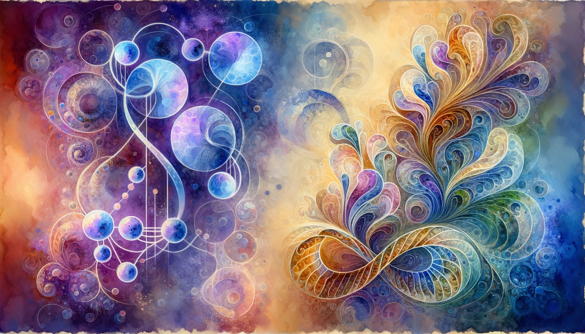

written by Eric J. Ma on 2026-08-07 | tags: quantum computing bayesian probability qubits entanglement interference superposition sampling inference amplitudes

In this post, I share what I've learned about quantum computing from the perspective of a probabilistic Bayesian. I strip away the physics to reveal a familiar picture: qubits as amplitude vectors whose squares are probabilities, gates that shape distributions through interference, and measurement as sampling. The parallel to Bayesian inference is striking. Our priors and likelihoods shape posteriors; quantum gates shape amplitudes. What if the quantum computer isn't a magic box, but a sampler purpose-built for the combinatorial spaces we already struggle to navigate classically?
This is a post I have been wanting to write for a while. As of 2026, I have been working much more closely with my teammate Alexey Galda, and part of that has been one-on-one tutoring on the foundations of quantum computing. (To be able to learn from someone well-trained, in a one-on-one setting, is a real privilege!)
Because I learn best by teaching, and because retrieval practice is the best way to make knowledge stick, I decided to write up what I have absorbed so far. I will readily admit that plenty of details are still beyond my grasp. Even so, I want to leave you with enough of a "fat marker sketch" of the ideas to reason about where quantum computing might genuinely help.
Here is the angle I am going to take. I have been doing Bayesian modeling for years, which means I have spent a lot of time thinking about probability distributions, sampling, and inference over spaces too big to enumerate. That turns out to be a surprisingly good lens for quantum computing. So that is how I am going to explain it: quantum mechanics as seen by a probabilistic Bayesian.
If you're ready for the ride, here we go!
Start with the most fundamental object in quantum computing: the state of a single qubit. A one-qubit state is an arrow of length 1 in a two-dimensional space whose axes are the two basic states |0> and |1>. The arrow's coordinates along those axes are its amplitudes. Because the arrow has length 1, its tip sits on a unit circle, a slice of the Bloch sphere (the standard name for the full qubit state space).
Drag the arrow above. Its projections onto the |0> and |1> axes are the amplitudes, and the squares of those projections are the probabilities of measuring |0> or |1>. That squaring is the bridge into your world as a probabilistic Bayesian, and it is the lens we will use for the rest of the post. The new ingredient, with no analogue in classical probability, is that amplitudes carry a sign: the arrow can point anywhere on the circle, including where a coordinate is negative. That signedness stays quiet for a single measurement, but it is the seed of everything quantum that follows.
That picture was for one qubit, which lives in two dimensions. Add a second qubit and the state now has four basis states (|00>, |01>, |10>, |11>), so the arrow lives in four dimensions, with one amplitude per basis state. Add a third and you get eight. The number of amplitudes doubles with every qubit:
| Number of qubits | Basis states (= amplitudes) | Examples |
|---|---|---|
| 1 | 2 | 0, 1 |
| 2 | 4 | 00, 01, 10, 11 |
| 3 | 8 | 000, 001, 010, 011, 100, 101, 110, 111 |
| n | 2^n | All binary strings of length n |
Play with the doubling below: one qubit gives two amplitudes, two qubits give four, three give eight.
This is the first place quantum computing leaves classical intuition behind, and it leaves fast. A 50-qubit register has 2^50 amplitudes, more than a quadrillion; you cannot write them all down, let alone store the state on a classical machine. Measuring collapses that whole arrow to a single bitstring, drawn with probability equal to its amplitude squared, the many-qubit version of what the Bloch circle showed.
We should clarify one assumption: in the interactive diagrams above, we treated the qubits as independent. The general n-qubit state is a single arrow in 2^n dimensions, and most such arrows cannot be split into one circle per qubit. That non-splitting is entanglement, which has its own section below.
Before we move on, we should make this picture second nature. Drag the circles until it is obvious how each independent qubit maps to one circle, how the joint amplitudes are the products of their coordinates, and how the probabilities factor. That clean correspondence is the foothold we will want when entanglement arrives and the one-circle-per-qubit picture stops working.
Step back from amplitudes for a moment. If you only care about what a measurement will tell you, a qubit behaves like a biased coin, and a register of qubits like a pile of coins. That is the probabilistic-Bayesian lens I promised in the intro, and I will lean on it for the rest of the post; the widget below lets you flip 1, 2, or 3 and watch the outcomes follow the distribution. Just remember the coin view is a simplification, the shadow the amplitudes cast on a measurement, and it hides the signs that the interference section later puts to work.
Entanglement, in this framing, is when the state of one qubit cannot be described independently of another. When two qubits are entangled, measuring one instantly tells you something about the other, no matter how far apart they are. This non-local correlation is a key resource in quantum computing, and it has no clean classical analogue. For a probabilistic Bayesian, think of it as two coins where reading one immediately tells you what the other shows.
Here is that idea made geometric. Two dials below set the qubits as if they were independent; the entanglement dial mixes in correlation. Watch the joint amplitudes stop factorizing, and the concurrence climb from 0 (independent) toward 1 (maximally entangled).
An amplitude's sign is easy to ignore, because a single measurement only sees the squared size, which is just a probability. The sign only matters when amplitudes combine: two amplitudes of the same sign reinforce, and two of opposite sign can subtract all the way to zero. That cancellation is interference, and it has no classical analogue. Classical probability distributions are built from non-negative numbers that pile up; quantum states are built from signed amplitudes that can interfere.
One tool that does the mixing is the Hadamard gate. It takes any input state and produces a specific output by blending the two input amplitudes together, with a minus sign baked into one of the blends. The widget below lets you drag the input arrow and watch the output respond. The butterfly diagram in the middle traces each input amplitude as it splits into contributions at each output, so you can see exactly where reinforcement and cancellation happen.
Drag the input to the diagonal (45 degrees, the |+> state) and look at the butterfly. Two contributions arrive at each output. At output |0>, both are positive, so they reinforce, and the output arrow swings hard toward |0>. At output |1>, one is positive and one is negative, so they cancel, and |1> vanishes. That is interference made visible: the minus sign killed one output while boosting the other. Now drag to other angles and watch how the balance between reinforcement and cancellation shifts. When only one input amplitude is nonzero (try |0> or |1>), there is only one path through the gate, so nothing cancels.
Two Hadamards in a row undo each other precisely because the minus signs cancel on the way back. On n qubits you apply a Hadamard to each wire; that is how a uniform superposition gets built in the first place, and how it gets recombined later so the signs can interfere.
A quantum program is an arrangement of gates that concentrates amplitude on the qubit configurations representing the solution to a problem, and cancels the rest. The gates do not need to know the answer ahead of time; they encode a way to score candidates, and interference amplifies whatever scores well. The result is a probability distribution deliberately shaped so that the solution is likely and the noise has vanished.
If you are a Bayesian, this should sound familiar. Your prior and likelihood shape a posterior; a quantum circuit's gates shape amplitudes. Then, to read the answer out, you measure, and measurement is just drawing a sample from that shaped distribution.
And here is where it finally clicks for me, because in my own work building Bayesian models, sampling is the bottleneck. The core problem in Bayesian inference never changes: your posterior may be intractable, so you sample. But sampling is hard! Your chains may not mix, or there may be divergences, and if part of your problem lives in a combinatorial space, good luck with the approximations.
What if you didn't have to enumerate a combinatorial space at all, but instead let your sampler live in superposition over the whole of it?
That's the quantum computer's party trick. It isn't a magical exponential speedup for everything. But it can be viewed as an MCMC sampler, purpose-built for exactly the kind of problem we already wrestle with: inference over spaces too big to enumerate classically.
In this blog post, we stripped away much of the physics of quantum computing to give you the following picture to walk away with. A qubit is an arrow on a unit circle; its coordinates are amplitudes, and their squares are probabilities. A register of n qubits is a single arrow in 2^n dimensions, one amplitude per possible bitstring. Entanglement is when that arrow cannot be split into one circle per qubit. Interference is what happens when signed amplitudes combine through gates: same signs reinforce, opposite signs cancel, and the quantum program uses this to concentrate amplitude on the configurations that represent solutions. Measurement is drawing a sample from the resulting distribution.
If you are a probabilistic Bayesian, the parallel is exact. Your prior and likelihood shape a posterior; a quantum circuit's gates shape amplitudes. You sample from your posterior; you measure from the quantum state. The quantum computer is not a faster laptop or a magic box. It is a device that is very good at exactly the thing we already struggle with classically: representing and sampling from distributions over spaces too big to enumerate.
Many details here are still beyond my grasp. But holding this mental model has already changed how I read about quantum computing. Where I used to see mysterious physics, I now see amplitude vectors, clever encodings, and interference doing the heavy lifting, all on hardware built for exactly that. I hope it does the same for you.
@article{
ericmjl-2026-quantum-ml-for-the-probabilistic-bayesian,
author = {Eric J. Ma},
title = {Quantum ML, for the Probabilistic Bayesian},
year = {2026},
month = {08},
day = {07},
howpublished = {\url{https://ericmjl.github.io}},
journal = {Eric J. Ma's Blog},
url = {https://ericmjl.github.io/blog/2026/8/7/quantum-ml-for-the-probabilistic-bayesian},
}
I send out a newsletter with tips and tools for data scientists. Come check it out at Substack.
If you would like to sponsor the coffee that goes into making my posts, please consider GitHub Sponsors!